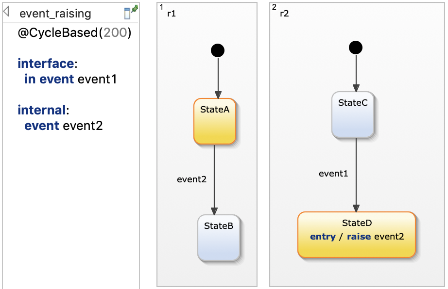
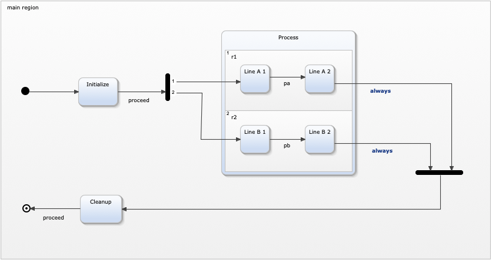

Orthogonality
This example demonstrates the usage of orthogonal states as well as of forking and joining synchronization nodes. For more details, please also refer to our documentation.
Orthogonal regions
YAKINDU Statechart Tools allows to specify orthogonal regions that are executed virtually concurrently. Orthogonal regions can be modeled either on top level, or within a composite state (or subdiagram). They allow to describe that the modeled system can be in multiple states simultaneously.
Let's take the simplified example of a keyboard controller. The user can enable caps lock and num lock. These are two independent functionalities, and the keyboard can have both enabled at the same time.

Execution order and event handling
Orthogonal regions are executed in a deterministic sequential order and not in parallel as one might expect. The execution order is defined by the regions' priorities. These are indicated in the top left corner of a region.
The defined execution order plays a particular role when orthogonal regions raise and react to the same events. Let's consider the following example. Region r2 reacts to event1 which causes a state transition to StateD which in turn as a effect raises event2. Intuitively, one would expect that rasing event2 in region r2 directly causes a state transition in region r1. However, this is only the case for the @EventDriven execution scheme, in which raising an event always invokes a new run-to-completion cycle.
Using the @CycleBased execution scheme, events are only visible in those regions that have not been processed yet. After all regions have been processed, the event is no more marked as being raised. Hence, the next cycle does not trigger the transition from StateA to StateB. See also chapter Raising and processing an event in our documentation.

Forks and joins
Orthogonal regions can not only be defined on top level but also within composite states. The semantics explained above are the same. The following example model uses a synchronization node to fork the execution flow into both orthogonal regions. After both regions have executed their state transitions, the execution flow is joined again by a synchronization node. A joining synchronization is only executed when all incoming transitions can be taken within the same run-to-completion cycle. For more details, please refer to our documentation on Synchronizations.
